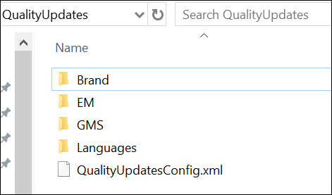

(Optional) Verify QualityUpdates Folder
- Quality Update is a group of multiple patches for extensions, platform, and language packs. Quality Update releases happen over a certain time period.
- To install quality updates, the QualityUpdates folder is present in the Installation media at ...\InstallerDVD\InstallFiles in parallel to the GmsInstallerSetup.exe file.
- All the patches must be arranged within the QualityUpdates folder.
- The QualityUpdatesConfig.xml file must be present in the QualityUpdates folder.
- If a same prerequisite of Platform or extension is present in the M300 package as well as the QualityUpdates folder, then Installer gives priority to the prerequisite from the QualityUpdates folder.
- You can have both the Quality Updates and Hotfixes folder in the Installation media at ...\InstallerDVD\InstallFiles in parallel to the GmsInstallerSetup.exe file. This enables the Installer to select the latest patch for the extension or Platform from Quality Updates or Hotfixes folder during installation.
